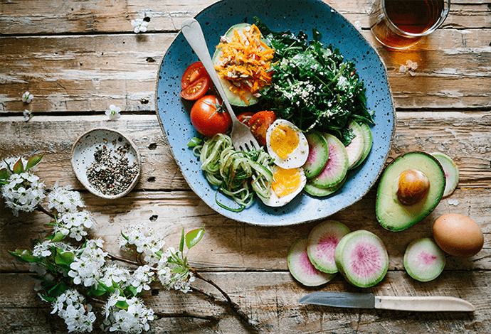
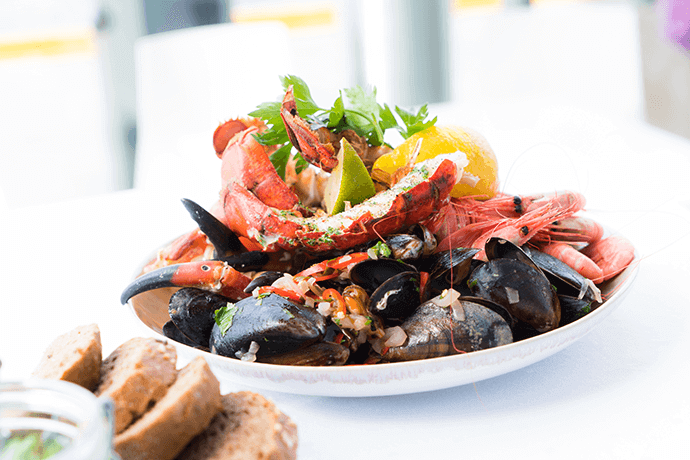
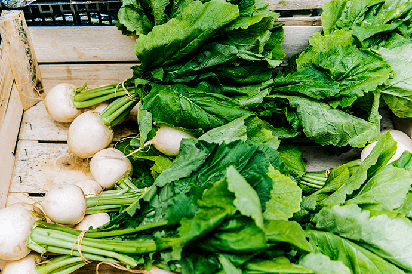
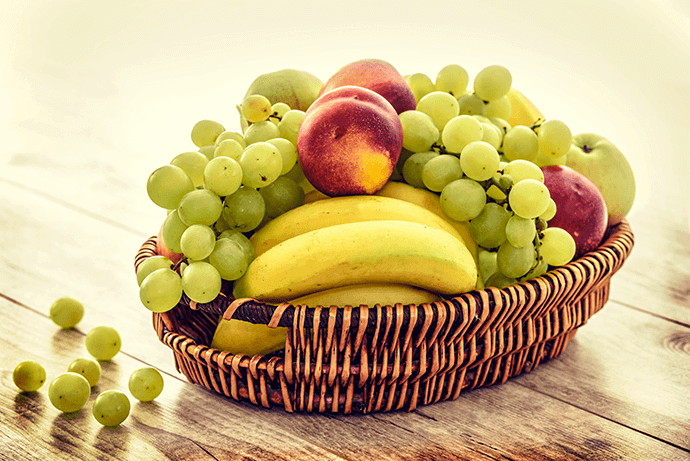
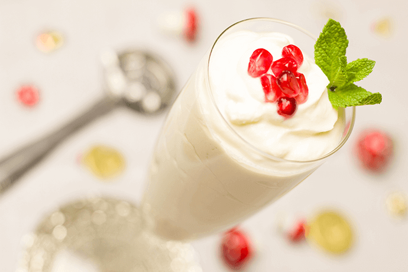

同等重量的食物，热量差异极大。所以，只要选对食物，吃的饱饱的也能瘦！
· 选择高蛋白质、低脂肪的食品
治疗肥胖最重要的是防止体内蛋白质的分解，因此必须选择低热量，却富含蛋白的食品。肉类必须去除脂肪、皮，选择脂肪少的部分。
鱼类也要选择含高蛋白质、低脂肪的种类。白色肉质的鱼或者文蛤之类的贝类、花枝、章鱼、螃蟹、虾等都是含高蛋白、低热量的食品。
· 低糖食品也含维他命、无机质
少吃芋头类、玉米、南瓜之类高热量的食品，多吃糖分少的蔬菜、海藻、菌类、魔芋类食品。
尤其必须多摄取绿、黄色蔬菜。以下是糖分较少的蔬菜：油菜、韭菜、菠菜、萝卜、豆芽、茄子、蚕豆、莴苣、美国芹菜、茼蒿、高丽菜、白菜、青椒、小黄瓜等。
· 以低糖食品代替糖分高的食品
凉粉、减重糕点比西点好;人工甘味料比砂糖好;低脂果酱比普通果酱好;新鲜水果比水果罐头、水果干好。
· 以低脂食品代替热量相同的食品
譬如我们可以作如下的选择：无油色拉酱比普通色拉酱好;低卡蛋黄酱比普通蛋黄酱好;低脂人造黄油比普通人造黄油好;酸奶、脱脂牛奶比普通牛奶好;思乐冰比冰淇淋。
· 饮料最好不要加糖
喝咖啡、红茶时，最好不要加糖和奶精。绿茶、麦茶、乌龙茶都是没有热量的饮料，最适合减重者饮用。
500CC的罐装果汁、咖啡就有50大卡，如果喝了自己喜欢的饮料，就必须减少主食的热量，才能将自己的饮食热量有效的控制在容许摄取的范围之内。